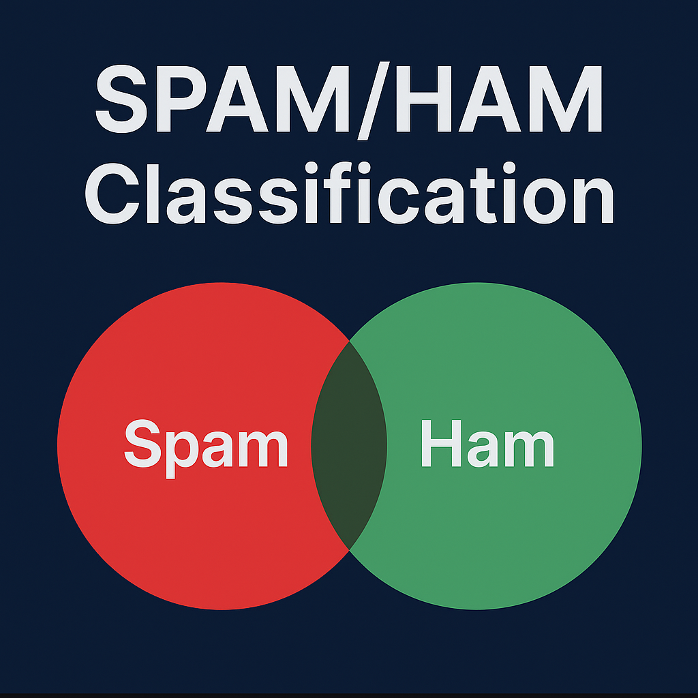

Education
I’m a UC Berkeley student studying Data Science and Cognitive Science. I enjoy building real systems that ship: translation tools, spam classifiers, and data products that help people decide.

I'm a Data Science and Cognitive Science major at UC Berkeley interested in data engineering, software engineering, as well as diving into machine learning. Open to have fun in life.


Photography content temporarily hidden while the site focuses on technical work.
Open to internships, research, or collaboration — let’s connect!